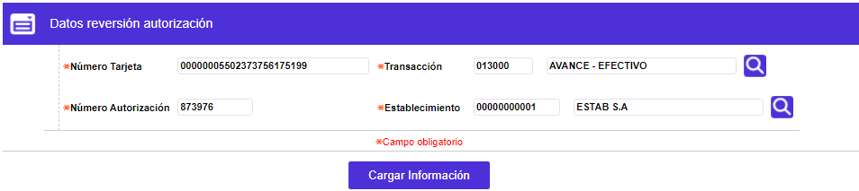
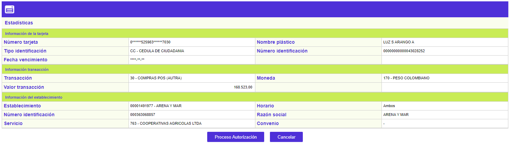

Reversión de Autorizaciones |
Esta función se utiliza para reversar las autorizaciones que no van a ser aplicadas, por ejemplo, en el caso que el cliente se retracta de efectuar una compra. Esta reversión se realiza con el fin de restablecer el cupo disponible de su tarjeta y que el cliente pueda hacer uso de su línea de crédito.
Filtro: El formulario cuenta con un filtro inicial de búsqueda, necesario para la consulta de la información:

.Número tarjeta |
En este campo se captura el número de tarjeta del cliente a quien se desea consultar. |
Transacción |
Campo con lista de valores poblada previamente en la opción orígenes de transacciones de las tablas reservadas del módulo Núcleo, de la cual la entidad selecciona en el momento de registrar la autorización, la clase de transacción que se autoriza realizar al cliente. |
Número autorización |
En este campo se captura el número de autorización sobre el cual se desea realizar la consulta. |
Establecimiento |
Si la entidad desea realizar la consulta de las autorizaciones por código de establecimiento, en este campo se captura su código de identificación, desplegándose el nombre del mismo. |
Al cargar la información a través del botón, se muestra un formulario que contiene las opciones Proceso autorización y Cancelar.

Número tarjeta |
Muestra el número de tarjeta ingresado de la revesión que se desee ingresar. |
Nombre plástico |
Muestra el nombre del cliente de la tarjeta. |
Transacción |
Campo con lista de valores poblada previamente en la opción orígenes de transacciones de las tablas reservadas del módulo Núcleo, de la cual la entidad selecciona en el momento de registrar la autorización, la clase de transacción que se autoriza realizar al cliente. |
Establecimiento |
Campo en el cual se registra el código del establecimiento en dónde se está realizando la transacción. |
Número autorización |
Campo numérico de 6 posiciones, obligatorio, en cual se registra el número de autorización que la entidad desea cancelar. |
Número identificación |
Contiene el número de documento de identificación del tarjetahabiente. |
Teléfonos |
Muestra los números telefónicos que el cliente tiene registrados en su producto. |
Dirección |
Indica la dirección de correspondencia del cliente a quien se le realizará la cancelación de la autorización. |
Fecha vencimiento |
Muestra la fecha de vencimiento de la tarjeta capturada previamente. |
Valor transacción |
En este campo se registra el monto de la transacción que se está autorizando. |
Moneda |
Campo con lista de valores de la que la entidad selecciona la clase de moneda sobre la cual se otorga la autorización. |
Número referencia |
Despliega el código asignado por el sistema a la autorización, una vez que la solicitud ha sido aprobada, y que la identifica para garantizar que sea única. |
Número auditoría |
En el momento de ser aprobada la solicitud de autorización el sistema asigna un código consecutivo para monitorear los códigos de autorización dados y es el que se muestra en este campo. |
Fecha y hora autorización |
Campo en formato YYYY-MM-DD HH:MM:SS que informa el momento en que fue emitida la autorización a reversar. |
Reversar Autorización: A través de este botón el sistema inicia el proceso de reversar la autorización, y muestra el resultado en el bloque Respuesta de la reversion.
En este bloque, una vez capturada la información requerida para la reversión, se muestra la respuesta arrojada por la solicitud de autorización una vez se apliquen las correspondientes validaciones.

Código respuesta |
Corresponde al código y descripción de la respuesta a la solicitud de reversión. |
Número autorización |
En caso de que la solicitud de reversión haya sido exitosa, en este campo aparece el número que fue asignado como aprobación de la misma. |